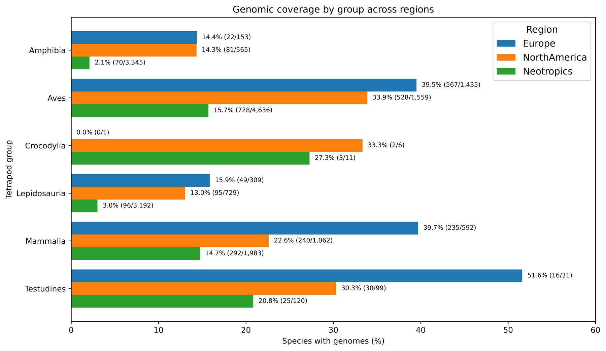
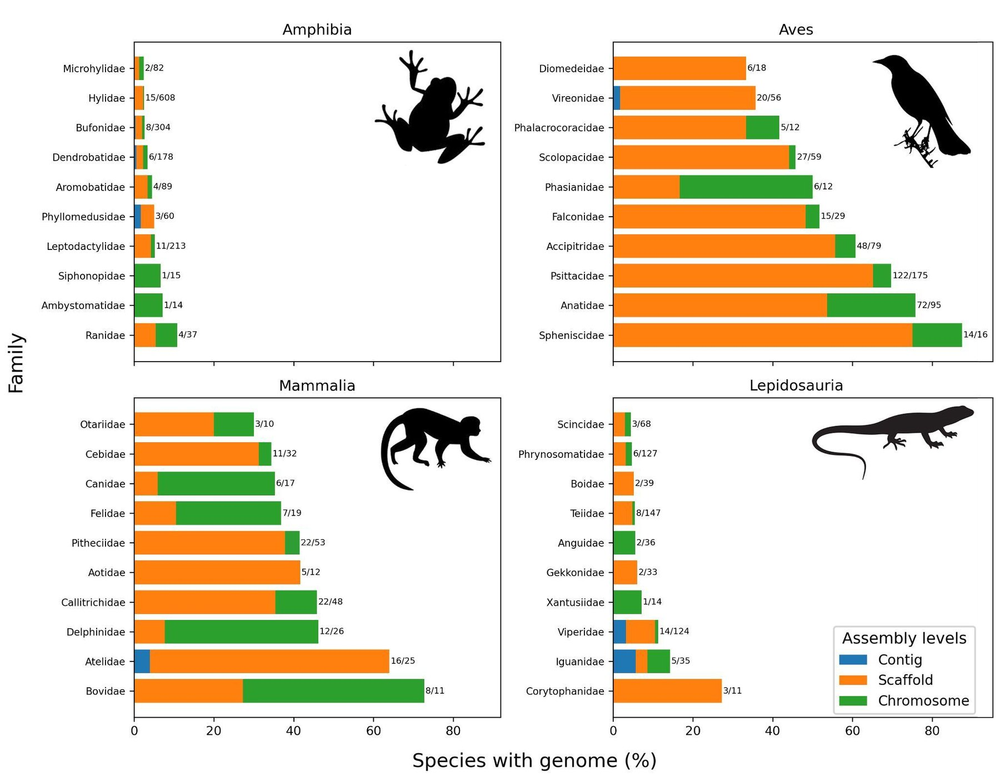
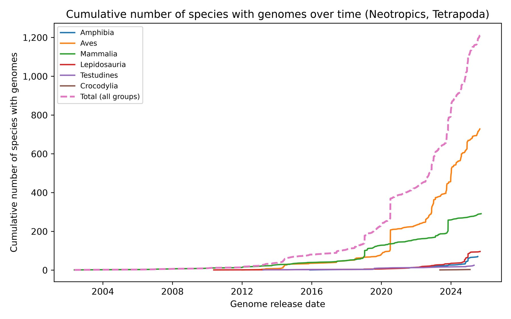
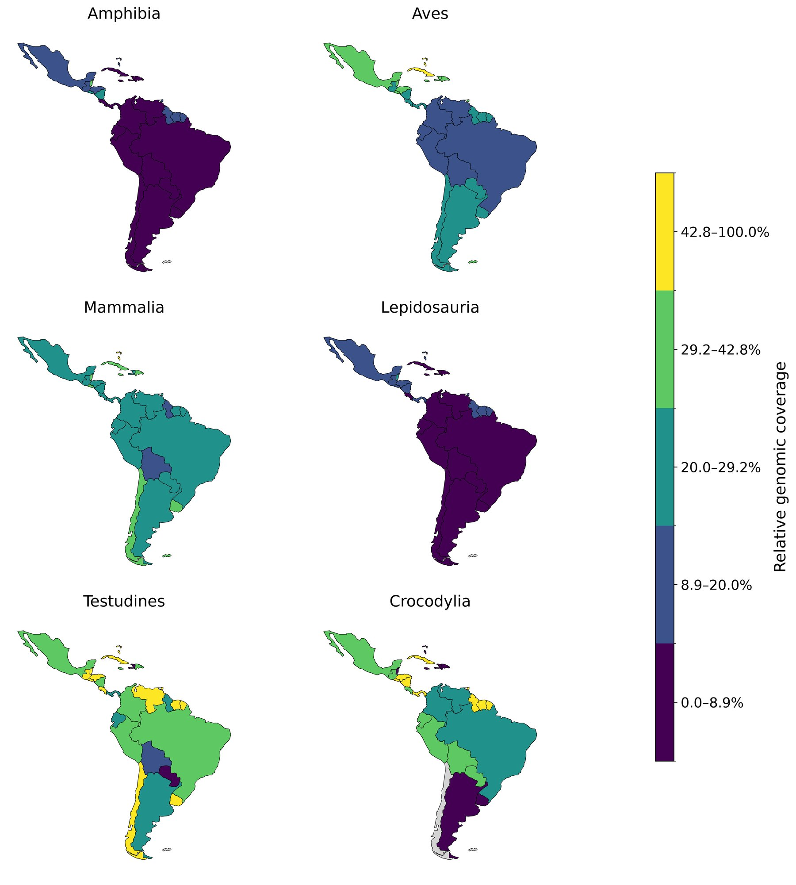

Genetics and Molecular Biology · 2026
Genômica nos Neotrópicos
A região mais biodiversa do planeta ainda tem poucos genomas. Entre as espécies de vertebrados terrestres que vivem do México ao sul da América do Sul, só 1 em cada 11 tem um genoma publicado. Para anfíbios, lagartos e serpentes, a proporção cai para cerca de 1 em 40.
A parte colorida de cada silhueta é a porcentagem de espécies do grupo nos Neotrópicos que têm genoma no NCBI, medida pela área da silhueta, de baixo para cima. Estão em ordem crescente, do sapo ao crocodilo. Os crocodilianos têm só 11 espécies na região, então uma espécie a mais ou a menos muda muito a porcentagem.
Pirani RM, Rainha RN, Magalhães FM, da Silveira Filho RR, Werneck FP, Domingos FMCB e Vasconcellos MM. doi:10.1590/1678-4685-GMB-2025-0276
Por que isso importa
Um genoma é o mapa completo do DNA de uma espécie
Com ele dá para estudar como as espécies surgiram, como se adaptam ao clima e quanto da sua diversidade genética já foi perdida. Esses dados também ajudam a decidir quais populações proteger. Mas sequenciar genomas é caro, e a maior parte dos genomas publicados vem de espécies da Europa, da América do Norte e de outros países ricos. Os Neotrópicos, que reúnem a Amazônia, os Andes, o Cerrado, a Caatinga, a Mata Atlântica e o Caribe, ficam para trás.
O que fizemos
Cruzamos duas bases públicas, espécie por espécie
Do GBIF, que reúne registros de ocorrência de espécies, tiramos a lista de anfíbios, répteis, aves e mamíferos que vivem em cada um de 35 países e territórios neotropicais. Do NCBI, o maior repositório de genomas do mundo, tiramos todas as montagens de genoma desses grupos. Depois contamos, para cada grupo, família e país, quantas espécies já têm pelo menos um genoma. Fizemos a mesma conta para a Europa e a América do Norte, para comparar.
Resultado 1
Os grupos mais diversos são os menos sequenciados
Aves e mamíferos concentram a maior parte dos genomas. Anfíbios e lagartos e serpentes somam mais de 6.500 espécies na região, e menos de 170 delas têm genoma.
O comprimento de cada barra é o número de espécies do grupo nos Neotrópicos. A parte verde são as espécies com genoma. Dados da Tabela S1 do artigo.
Resultado 2
Os Neotrópicos ficam atrás da Europa e da América do Norte
Em proporção de espécies com genoma, a região está abaixo das outras duas em quase todos os grupos. A diferença é maior nos anfíbios: 2,1% nos Neotrópicos contra cerca de 14% na Europa e na América do Norte.
Crocodilianos e tartarugas têm poucas espécies, então uma espécie a mais ou a menos muda bastante a porcentagem. O único crocodiliano registrado na Europa é um animal de cativeiro, por isso o valor de 0% ali não deve ser lido como uma lacuna.

Resultado 3
Poucas famílias concentram os genomas
Entre as aves, papagaios e araras (Psittacidae, 122 espécies com genoma), patos (Anatidae, 72) e gaviões (Accipitridae, 48) lideram. Entre os mamíferos, os destaques são os saguis (Callitrichidae, 22), os zogue-zogues, parauacus e uacaris (Pitheciidae, 22) e os morcegos Phyllostomidae (19). Nos répteis, Colubridae é a única família de lagartos e serpentes com mais de 20 espécies sequenciadas. Nos anfíbios, a família mais amostrada, Hylidae, tem cerca de 15.
A maioria dos genomas também é incompleta. Só um quarto chega ao nível de cromossomo, o mais útil para comparar espécies.

Resultado 4
O ritmo de sequenciamento é desigual
Desde 2002, o número de espécies neotropicais com genoma cresce bem mais rápido em aves e mamíferos. Anfíbios e répteis avançam bem mais devagar.

Resultado 5
Os países mais diversos têm a menor cobertura
Ilhas do Caribe e países do norte da região, como México, Belize e Panamá, têm as maiores proporções de espécies com genoma, em parte porque têm menos espécies e estão perto dos centros de pesquisa da América do Norte. Já Brasil, Colômbia, Equador e Peru, que estão entre os países mais diversos do mundo, raramente passam de 29% em algum grupo além das tartarugas. Para anfíbios e lagartos e serpentes, a cobertura fica abaixo de 10% na maioria dos países.
| País | Anfíbios | Lagartos e serpentes | Mamíferos | Aves |
|---|

Onde sequenciar primeiro
Áreas prioritárias
Amazônia, sobretudo a ocidental
A maior riqueza de espécies coincide com a menor representação genômica.
Andes e tepuis
Laboratórios naturais para estudar adaptação à altitude e ao clima.
Cerrado, Caatinga e Chaco
Biomas secos e sazonais, com linhagens únicas e forte pressão humana.
Remanescentes de Mata Atlântica
Ligam a fragmentação histórica à perda de diversidade genética de espécies endêmicas.
O que propomos
Capacidade local
Formação
Bioinformática e ciência de dados nos cursos de pós-graduação da América Latina, e vagas reservadas para pesquisadores do Sul Global em cursos internacionais.
Infraestrutura computacional
Acesso gratuito ou barato a clusters de computação para analisar os dados na própria região.
Colaboração equilibrada
Projetos desenhados em conjunto, autoria justa, acordos de dados equitativos e parcerias de longo prazo, em vez de amostras que saem do Sul e benefícios que ficam no Norte.